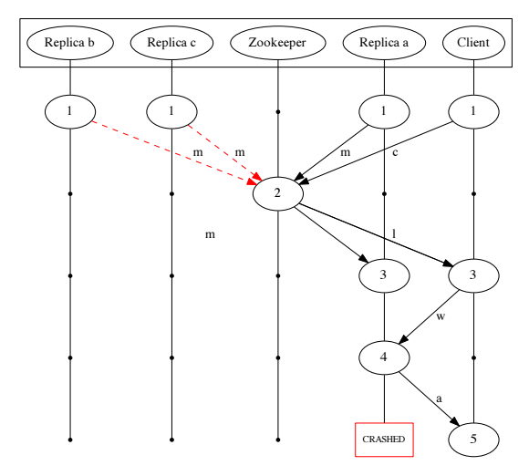

Lord of chaos
Becoming a Chaos Engineer
BEKK Radar
The simple act of logging
1: 2: 3: 4: 5: 6: 7: 8: 9: |
|
Distributed systems are complex
DON'T ROLL YOUR OWN!
Putting components together is hard

https://aphyr.com/posts/293-call-me-maybe-kafkahttps://people.eecs.berkeley.edu/~palvaro/molly.pdf
http://blog.empathybox.com/post/62279088548/a-few-notes-on-kafka-and-jepsen
CAP Theorem
- Consistency
- Availability
- Partition Tolerance
Even Google goes down!

What is Chaos Engineering
Chaos Engineering is the discipline of experimenting on a distributed system in order to build confidence in the system’s capability to withstand turbulent conditions in production.
Embrace Chaos
Principles
- Define ‘steady state’
- Hypothesize that this state continues during failure
- Introduce failures
- Try to disprove hypothesis
Advanced Principles
- Build a Hypothesis around Steady State Behavior
- Vary Real-world Events
- Run Experiments in Production
- Automate Experiments to Run Continuously
Lineage-driven Fault Injection
Lineage-driven Fault Injection Paper
QCon 2016: Monkeys in Lab Coats: Applying Failure Testing Research @Netflix
Chaos Engineering in the wild
Netflix - The Simian Army
Microsoft - Azure Search
https://azure.microsoft.com/nb-no/blog/inside-azure-search-chaos-engineering/
WazMonkey
https://github.com/smarx/WazMonkey
1: 2: 3: 4: 5: 6: 7: 8: 9: 10: 11: 12: |
|
Jepsen
How to start
Predictable outcomes
1: 2: 3: |
|
Selective test cases
Let the Lord of Chaos Rule
Questions?
twitter: @nikolaiii
slides: https://nikolaia.github.io/lord-of-chaos-slides/